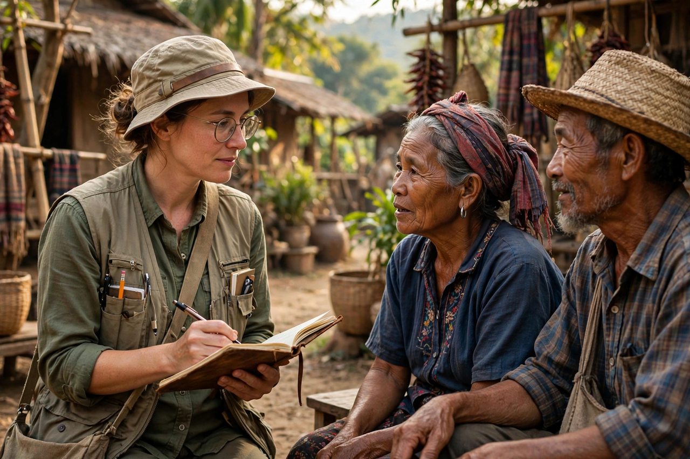

| Anthropology | |
|---|---|
 | |
| Subfields (US) | Cultural, biological, linguistic, archaeology |
| Key methods | Ethnography, participant observation, excavation, comparison |
| Key figures | Franz Boas, Bronisław Malinowski, Margaret Mead, Claude Lévi-Strauss |
Anthropology is the scientific study of humanity, concerned with human behaviour, human biology, cultures, societies and linguistics, in both the present and the past, including past human species. Drawing on the natural sciences, humanities and social sciences, it seeks a holistic understanding of what it means to be human.
In the American tradition established by Franz Boas, anthropology comprises four subfields: cultural (or social) anthropology, the study of living societies through long-term ethnographic fieldwork and participant observation, pioneered by Bronisław Malinowski; biological (physical) anthropology, covering human evolution, primatology and human variation; linguistic anthropology, on language and communication; and archaeology, the study of past societies through material remains. British social anthropology developed along somewhat separate lines under figures such as A. R. Radcliffe-Brown.
Core concerns include kinship, ritual, myth, exchange, power, and the tension between cultural universals and cultural relativism — Boas's doctrine that cultures must be understood on their own terms. Figures such as Margaret Mead, Ruth Benedict and Claude Lévi-Strauss brought anthropological ideas to wide audiences. Since the 1980s the discipline has interrogated its colonial entanglements and the ethics of representing other peoples, while applied anthropology extends its methods to medicine, development, business and forensics.